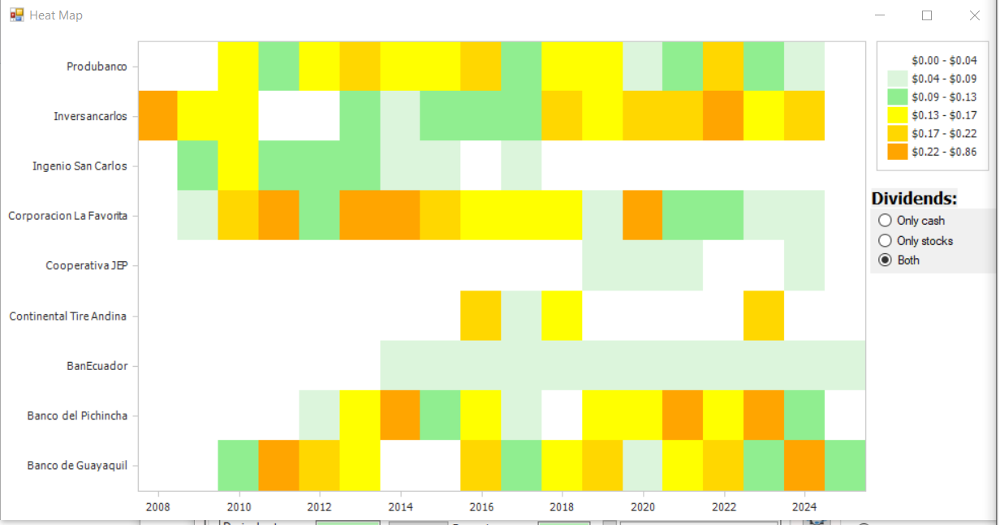
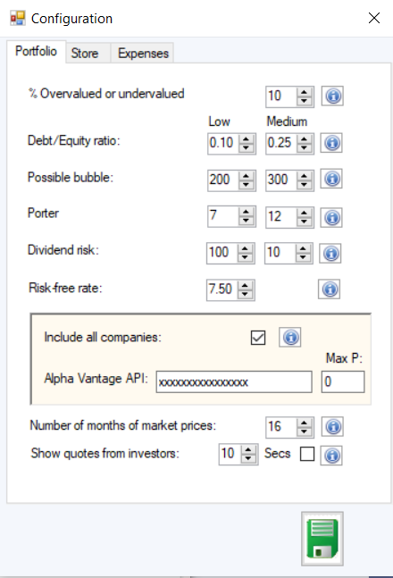
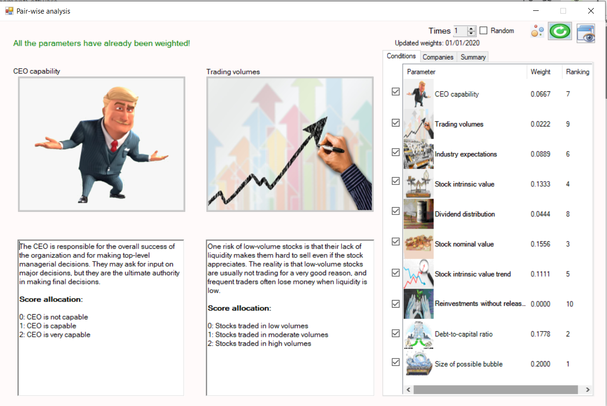
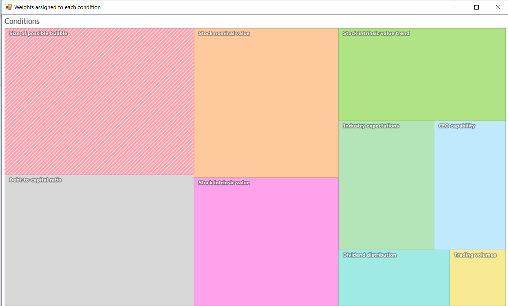
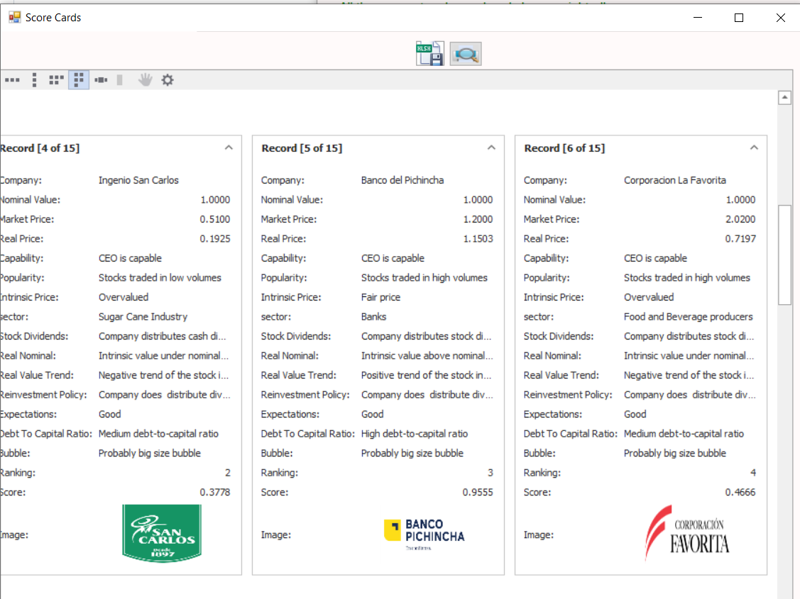
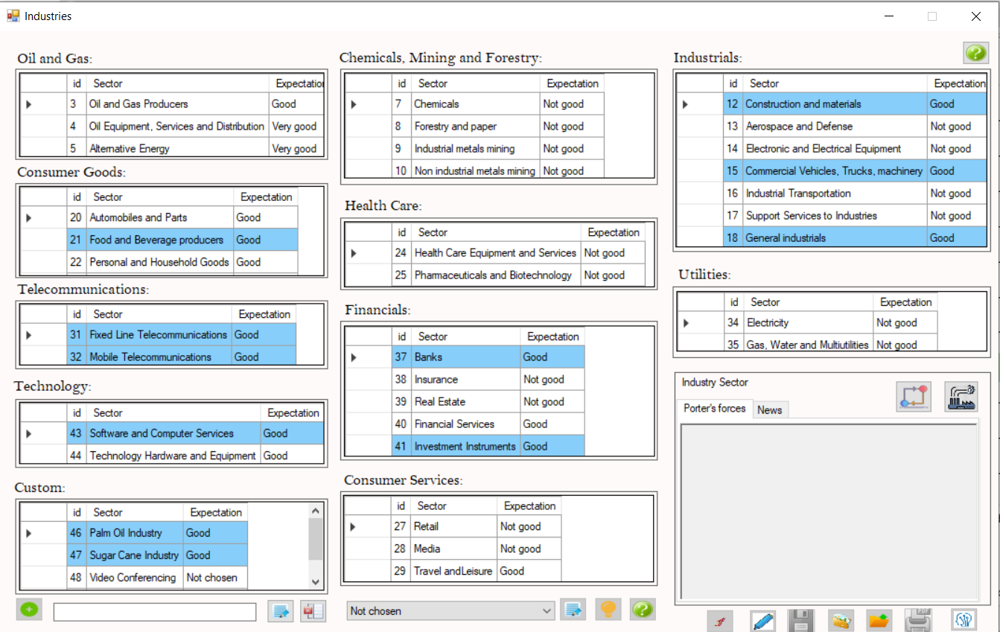
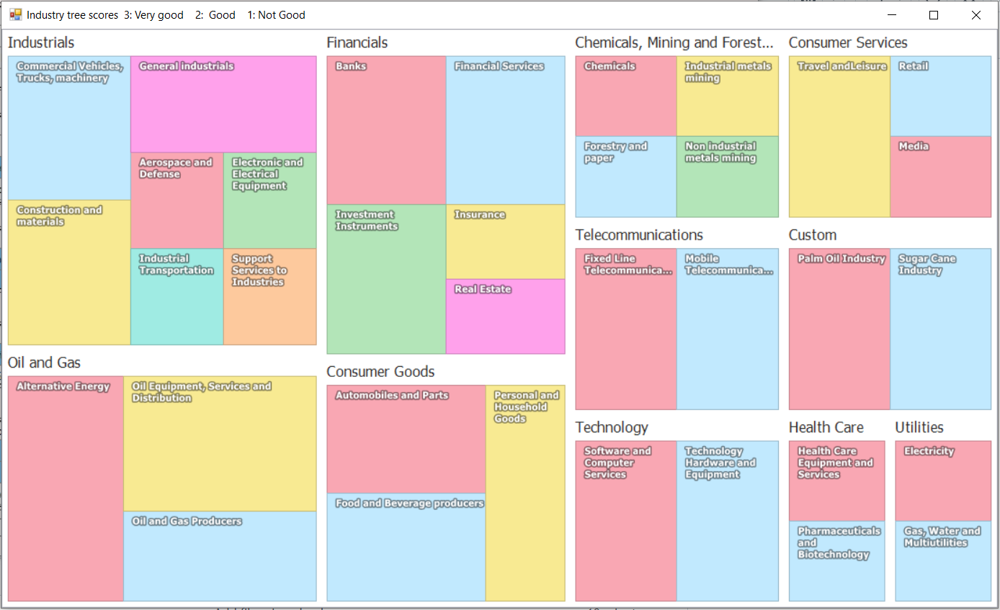
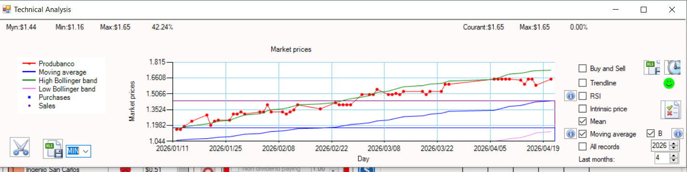
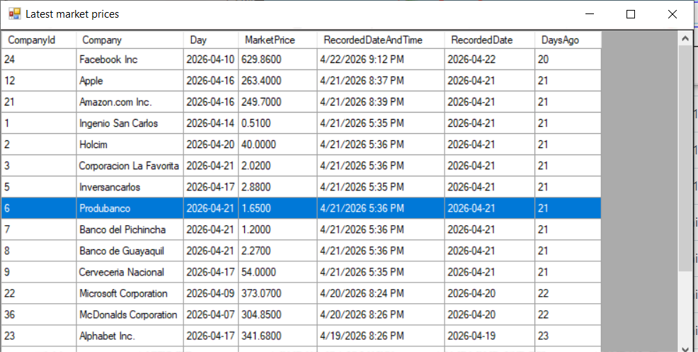
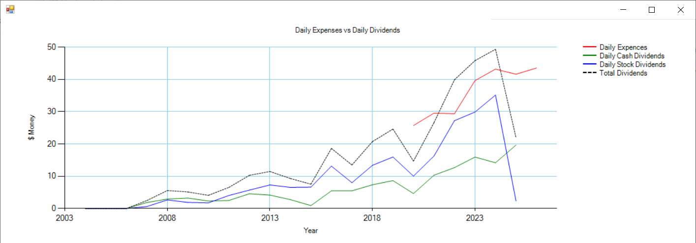

Interfaccia Principale
Panoramica del dashboard principale del software desktop, che fornisce accesso a tutti i moduli analitici e agli strumenti di portafoglio.

Registrazione Acquisto Azioni
Interfaccia utilizzata per registrare acquisizioni di azioni, inclusi quantità, prezzo e metadati della transazione.

Registrazione Vendita Azioni
Modulo per registrare vendite di azioni e aggiornare le posizioni del portafoglio in tempo reale.

Dividendi & Calcolo del Valore Intrinseco
Mostra i registri dei dividendi e calcola il valore intrinseco insieme ad altri indicatori finanziari.

Analisi della Tendenza del Valore Intrinseco
Visualizzazione storica dell’evoluzione del valore intrinseco nel corso di più anni.

Analisi della Volatilità
Confronto tra la volatilità del valore intrinseco e i movimenti medi annuali del prezzo di mercato.

Analisi di Correlazione
Correlazione statistica tra il valore intrinseco e il comportamento del prezzo di mercato.

Metriche della Struttura Finanziaria
Visualizzazione di debito versus capitale proprio, spese operative e posizione di cassa disponibile.

Indice di Salute Macroeconomica
Mostra indicatori di forza economica del paese associato all’azione selezionata.

Radar di Distribuzione dei Dividendi
Grafico radar che rappresenta la distribuzione dei dividendi tra tutte le azioni del portafoglio in un anno selezionato.

Performance Storica dei Dividendi
Tendenze della distribuzione dei dividendi aziendali nel tempo.

Heatmap dei Dividendi del Portafoglio
Visualizzazione heatmap dei flussi di dividendi tra partecipazioni del portafoglio e anni.

Analisi di Patrimonio & Rischio
Monitora evoluzione del patrimonio, esposizione al rischio, dividendi ricevuti e suddivisioni per settore.

Albero di Valutazione delle Azioni
Valutazione gerarchica delle azioni basata su 10 condizioni di investimento predefinite.

Configurazione Parametri di Sistema
Impostazioni avanzate per personalizzare parametri del modello e logica di valutazione.

Radar di Attività del Portafoglio
Monitora azioni possedute, acquistate e vendute nel corso di più anni.

Analisi dei Dividendi Accumulati
Totale cumulativo dei dividendi ricevuti da tutte le partecipazioni nel tempo.

Simulazione delle Performance
Simulazione rapida che confronta rendimenti del prezzo di mercato versus valore intrinseco.

Valutazione Ad-hoc delle Azioni
Strumento di valutazione manuale per analisi personalizzate delle azioni.

Albero dei Pesi delle Condizioni
Mostra la distribuzione dei pesi dei 10 criteri di valutazione.

Radar del Punteggio Aziendale
Visualizzazione radar dei punteggi finali di valutazione aziendale.

Schede di Valutazione delle Azioni
Schede riassuntive che mostrano risultati di valutazione per azione.

Motore di Simulazione degli Scenari
Simula modifiche nelle condizioni di valutazione per testare la sensibilità.

Simulazione Monte Carlo
Valutazione probabilistica delle azioni utilizzando scenari di mercato casuali.

Classificazione Industriale (Modello Porter)
Assegna settori e industrie utilizzando una logica strutturata di classificazione.

Albero dei Pesi dei Settori
Visualizzazione dell’influenza e della ponderazione tra industrie.

Valutazione Intrinseca Multi-Anno
Punteggio codificato a colori basato su differenti finestre temporali del valore intrinseco.

Analisi Tecnica di Mercato
Indicatori tecnici avanzati applicati ai dati del prezzo di mercato.

Sistema di Allerta Acquisto/Vendita
Definisce trigger futuri basati sul prezzo per decisioni di trading.

Timestamp dei Dati di Mercato
Mostra l’orario dell’ultimo aggiornamento registrato del prezzo di mercato.

Modellazione dei Parametri Settoriali
Pannello di configurazione per parametri di modellazione a livello settoriale.

Analisi Dividendi vs Spese
Confronta i dividendi medi giornalieri con le spese operative.

Analisi degli Interessi Composti
Simulazione degli effetti della capitalizzazione a lungo termine sulla crescita del portafoglio.

Interfaccia di Supporto Tecnico
Modulo di contatto per assistenza tecnica e supporto utenti.

Profilo Esecutivo Aziendale
Pannello informativo che mostra dati del CEO e della leadership esecutiva.